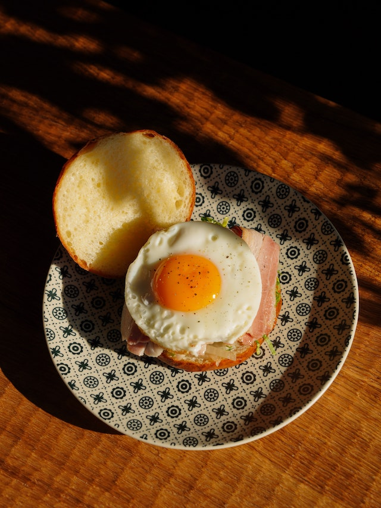

Fried Eggs

Description
Fried eggs are a staple in most cultures. In addition to being a good source of protein and healthy
fats, eggs are easy to prepare.
The following recipe will walk you through the simple preperation of the egg so that you can
join the millions of others around the world enjoying this healthy and plentiful food.
Ingredients
- Fresh eggs
- Butter or oil
- Salt and pepper
Steps
- Heat the butter or oil in a skillet over medium heat
- When the the oil or butter is hot, crack the eggs into the skillet, discarding the shells.
- For a classic sunny side up egg, fry slowly on one side until the white part of the egg is set and not runny.
- Place the eggs on a plate and eat with toast or fried potatoes and ham.